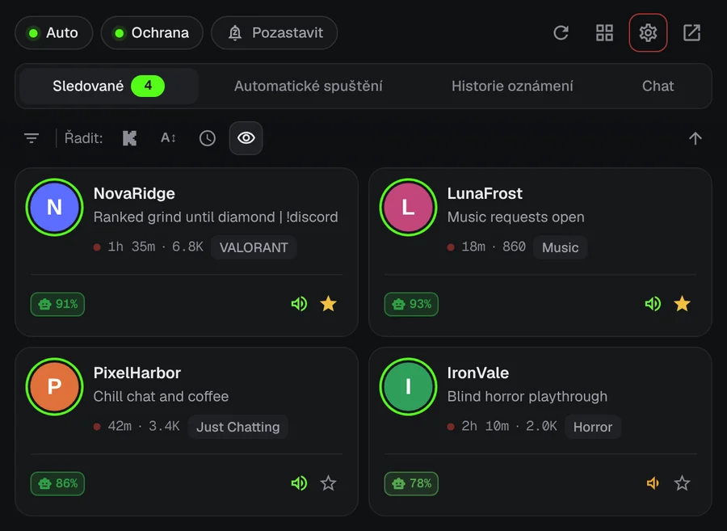
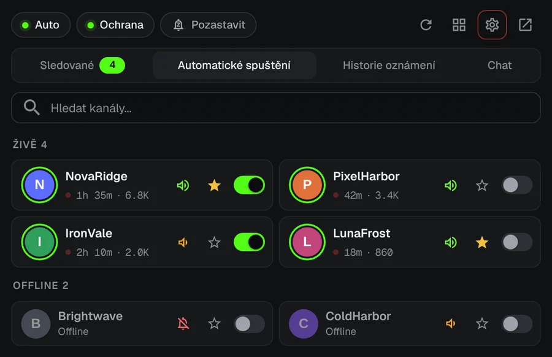
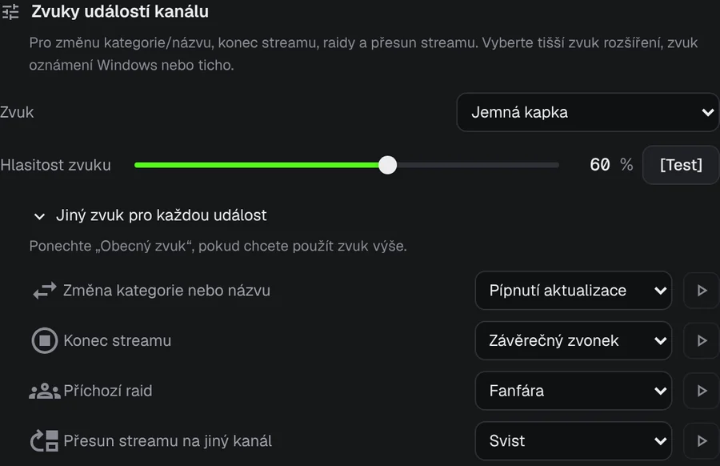
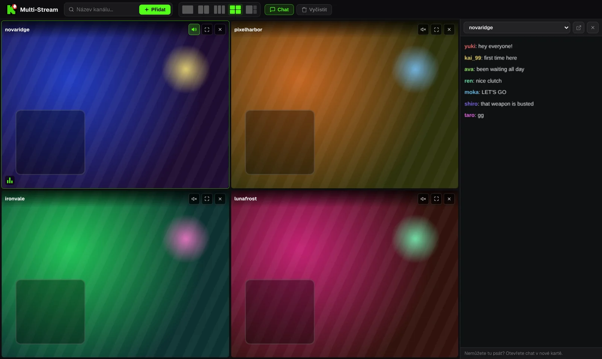

Už nikdy nepropásněte začátek streamu na Kicku.
Váš oblíbený streamer začne vysílat ve 3 ráno. KickAlert vám v tu chvíli pošle upozornění na plochu, i když nemáte otevřenou kartu Kick. Zdarma, bez omezení počtu kanálů a bez sledování.
Brzy i pro Edge a Operu
 KickAlert
KickAlertVyzkoušejte to. Stiskněte zvonek.
Tyto kanály jsou offline. Zapněte zvonek u jednoho z nich a uvidíte, co se stane, až začne vysílat.
Okamžitá upozornění
KickAlert poslouchá spojení Kicku v reálném čase, takže upozornění přijde ve chvíli, kdy stream začne, ne o několik minut později. Vyberte zvuk pro každý kanál, nastavte režim Nerušit nebo vše pozastavte do rána.

Automatické spuštění
Vyberte kanály, které se mají otevírat samy. Stream se otevře v nové kartě hned po začátku, bez duplicit, a karta se může zavřít, když raid přesune stream jinam.

Vědět, co se stalo
Pro raidy, konec streamu, změnu kategorie i přesunutý stream můžete u každého kanálu nastavit vlastní upozornění a vlastní zvuk.

Radar chatu
Sledujte až 5 chatů najednou a dostanete upozornění, když se v nich objeví vaše jméno nebo zvolené slovo, i když je Kick zavřený. Filtry chatu skryjí spam a zachytí slova napsaná podobně vypadajícími písmeny.
Až čtyři streamy v jedné kartě
Streamy začínají ztlumené. Zvuk toho, který chcete, zapnete jedním kliknutím. Chat je v postranním panelu.

Obsah streamů je ilustrační.
Vaše data zůstávají v prohlížeči
- Žádná analytika, žádné sledování
- Komunikuje jen s kick.com
- Každé oprávnění vysvětlené při prvním spuštění
- Zdrojový kód veřejně na GitHubu
Otázky
Je KickAlert zdarma?
Ano. Všechny funkce jsou zdarma a počet sledovaných kanálů není omezený.
Musím mít Kick otevřený?
Ne. KickAlert běží na pozadí a upozorní vás, i když nemáte otevřenou žádnou kartu Kick. Stačí být ve stejném prohlížeči přihlášeni na Kick.
Nainstaloval jsem ho, ale upozornění nechodí.
Nové instalace začínají potichu, aby vás upozornění nezahltila. Zapněte zvonek u kanálů, které chcete, nebo v Nastavení pro všechny kanály najednou. Kontrola „Přijde od tohoto kanálu upozornění?“ v nastavení každého kanálu ukáže, co dalšího by mohlo upozornění blokovat.
Ve kterých prohlížečích funguje?
Teď v Chromu a Firefoxu, Edge a Opera jsou na cestě. Brave, Vivaldi a další prohlížeče na Chromiu ho mohou nainstalovat z Internetového obchodu Chrome.
Nainstalovat KickAlert
Brzy i pro Edge a Operu